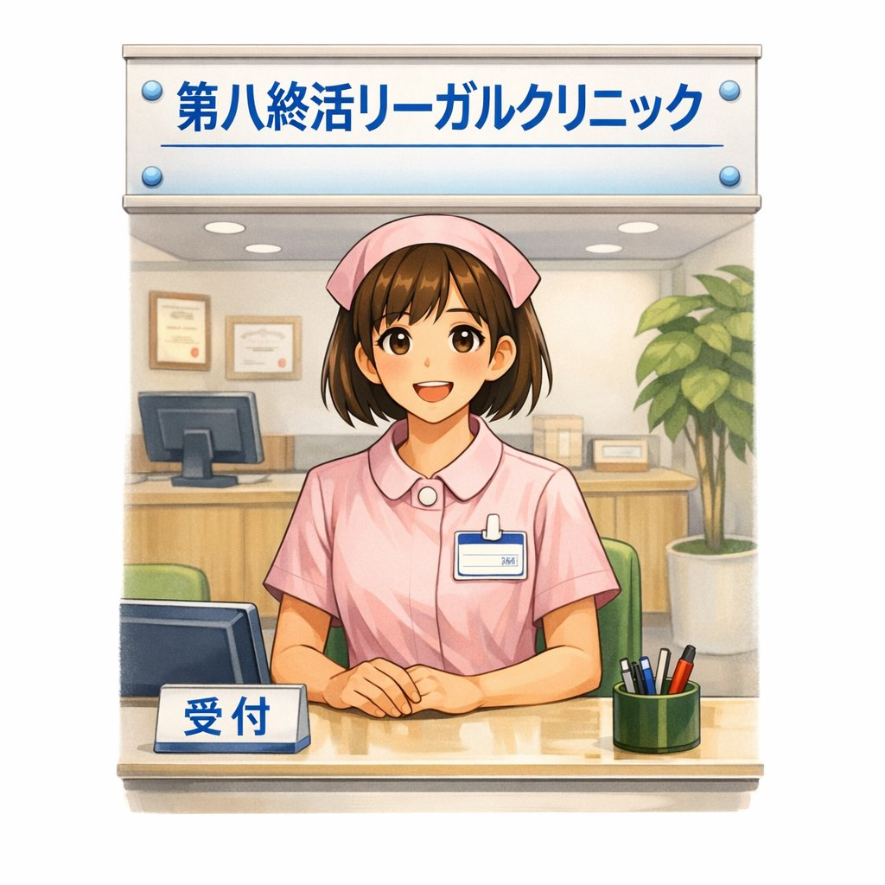

終活リーガルクリニック
終活に必要な手続きを、病院の問診票形式でわかりやすくご案内します。
入力するだけで、あなた専用の財産目録・エンディングノート・相続人関係図を作成できます。
相続人関係図
家族構成から法定相続人と相続分を自動で図示します
財産目録
不動産・預貯金・保険など7カテゴリで総資産を整理
エンディングノート
医療・葬儀希望から契約一覧まで一括で記録・印刷
診断で入力した内容は、当サービスのサーバーには送信・保存されません。郵便番号検索を利用した場合は、住所検索のため郵便番号のみ外部の住所検索サービスへ送信されます。
- 遺言書やエンディングノートをそろそろ準備したいと思っている方
- 自分の財産がどれくらいあるか整理しておきたい方
- 相続が発生したとき、誰が相続人になるかを確認したい方
- 老後・介護・葬儀について家族に伝えておきたいことがある方
- 死後に必要な手続きを家族に負担かけずに済ませたい方
診断結果は印刷して専門家へのご相談時に持参できます
入力完了後、財産目録・エンディングノート・生前契約一覧をまとめて印刷できます。専門家へのご相談時の持参資料としてそのままご活用いただけます。
本ツールはあくまで
参考資料の作成を目的としたものです。出力された相続人関係図・財産目録・エンディングノート・各種アドバイスの内容は
法的効力を持ちません。
本ツールの利用により生じた損害・トラブル・不利益について、
一般社団法人 相続手続士業の会および運営者は一切の責任を負いかねます。掲載情報の正確性・完全性を保証するものでもありません。
相続・遺言書の作成・任意後見契約など具体的な手続きにつきましては、必ず
専門家（司法書士・行政書士・弁護士・税理士）にご相談ください。
ご相談は、運営元の
一般社団法人 相続手続士業の会（03-6721-6811）でも承っております。
入院中の空き時間などに、スマートフォンでQRコードを読み取るだけで入力を開始できます。
https://sozokuexpert.github.io/endoflife/
家族構成
財産目録
対策状況
お悩み
ノート
医療の希望
診察結果

STEP 1 / 5
相続科家族関係・親族構成
現在の家族状況を教えてください。相続人の特定に使用します。
ご兄弟姉妹の人数（続柄別）
本人から見た続柄・人数を入力してください（全血のみ。半血は後のステップで追加できます）
STEP 2 / 5
財産科財産目録
おおよその財産・負債を入力してください。金額はすべて円単位です。
STEP 3 / 5
終活科既に行っている終活対策
済んでいるものにチェックしてください。（複数選択可）
STEP 4 / 5
相談科現在のご不安・お悩み
気になっていることをすべて選んでください。（複数選択可）
STEP 5 / 5
終活科エンディングノート
大切な情報を記録しておきましょう。印刷時に財産目録と合わせて出力されます。
葬儀・お骨の希望
先祖のお墓について
菩提寺（お墓のあるお寺）
現在のお墓の管理者
⚠️ 「収骨しない」を選択される前にご確認ください
火葬後に遺骨を引き取らない（収骨しない）ことを選択できる地域は限られています。全国の自治体・火葬場によって対応が異なり、収骨を義務付けている地域では選択できない場合があります。
→ ご自身のお住まいの地域で「収骨しない」が選択できるかどうかは、ご利用予定の火葬場に事前にご確認ください。
利用を希望する葬儀社
互助会の名称・連絡先
副葬品（棺の中に入れて欲しい物）
遺影の準備
葬儀に呼んでほしい方
📱 デジタル遺品リスト
📋 このページでは「何があるか」だけを記録します。
パスコード・パスワード・暗証番号は印刷後に手書きで記入してください。印刷物は自宅金庫や信頼できる専門家への預け入れなど、安全な方法で保管してください。
📱 スマートフォン
💻 パソコン
🏦 ネット銀行・ネット証券
📧 メール・クラウドアカウント
🌐 SNS・その他のオンラインサービス
📝 その他・特記事項
訃報をお伝えしたい方（連絡先一覧）
亡くなった際に連絡していただきたい方の情報をまとめておきましょう。
ペットについて
ペットを飼っている方は、万が一の際の引き取り先などをまとめておきましょう。
🎁 形見分け・譲り先リスト
特定の方に渡してほしい品物がある場合に記録しておきましょう。思い出の品・貴重品・コレクションなどを、渡してほしい相手と一緒に記録できます。
生前契約・解約が必要な契約一覧
「あり」を選択した項目の詳細入力欄が表示されます。書類・証明書は保管場所のみ入力できます。
STEP 5 / 7
医療科📋 医療に関する希望（事前指示書）
万が一、自分で意思表示ができなくなったときのために、医療に関する希望を記録しておきましょう。入力内容は診察結果とあわせて印刷できます。
私および私の家族（身元保証人含む）は、私の具合が悪くなり、死期が近く、このまま何も治療をしなければ救命することはできないが、治療しても私が希望する健康状態までの回復は期待できず、かつ自分で意思表示ができなくなったと判断されたときには、以下のように考えていただくようにお願いします。
ただしここに書かれたことは現在私が考えていることであり、私の意思で今後変更することもあります。
※ 予期しない突発的な事故の場合（例：交通事故・転倒で意識を失った・のどにものが詰まった等）は、ここに書かれた内容によらず、通常の医療をお願いします。
● 心肺蘇生（心臓マッサージなど）
＊蘇生処置：心臓を手で押して動かす心臓マッサージや、口や鼻などから肺に管をいれて人工呼吸をすることをいいます。
＊人工呼吸器を接続することで、自分の呼吸が停止しても自動的に呼吸を続けることができます。ただしいったん接続すると患者さんの呼吸状態が回復しない限り、この機械をはずすことは原則としてしません。
（注意）突然痰や食べ物が詰まって呼吸ができなくなったときなど、急に起こった窒息などの際は、救命のためこれらの処置を施すことがあります。
● 注射（中心静脈栄養・高カロリー輸液）
＊中心静脈栄養・高カロリー輸液とは首や股の部分の太い血管から濃度の高い点滴を常時することで、食事をとらなくても点滴だけで長期間生きていける方法です。
● 栄養（食事が口から入らなくなったときは）
＊胃管（いかん）：鼻から細いチューブを胃までいれて、ここから栄養を入れる方法です。1日2〜3回食事と同じように管を通して液体の栄養を入れます。
＊胃瘻（いろう）：胃カメラなどを使ってお腹に穴をあけ、細いチューブを通して直接栄養を外から胃に入れる方法です。穴はあとでふさぐこともできます。
● 臓器提供の意思
＊日本での臓器提供は「本人の書面による意思表示」と「家族の同意」が必要です。意思表示カード（臓器提供意思表示カード）や健康保険証・マイナンバーカードへの記載、インターネット登録（公益社団法人日本臓器移植ネットワーク）でも意思表示ができます。
● 献体の意思
＊献体とは、医学・歯学の教育・研究のために亡くなった後に遺体を提供することです。献体を希望する場合は、生前に大学医学部等の「献体登録」が必要です。登録後は遺族への説明と同意取得が重要です。ご遺体は解剖実習等に使用された後、原則として遺骨となって遺族の元に戻ります。
💡 入力後、日付と署名（実印）を手書きで記入することで、医療機関への提出書類として活用できます。
印刷は「診察結果」ページの印刷ボタンから行えます。
✓
問診完了 — 診察結果
入力内容をもとに、あなたに必要な終活手続きをご案内します
相続人関係図
本人（被相続人）
相続人（全血）
相続人（半血）
既に亡くなった方
婚姻関係
親族関係
処方箋 — 必要な対策
財産分配シミュレーション
専門家のご紹介
専門家による無料相談のお申し込みを承っています
表紙 → 相続関係図 → 財産目録 → エンディングノート → 契約一覧 → 処方箋の順で印刷されます（ポップアップ許可が必要）
💡 PDFで保存したい場合：印刷画面が開いたら、送信先（プリンター）を「PDFに保存」に変更してください。